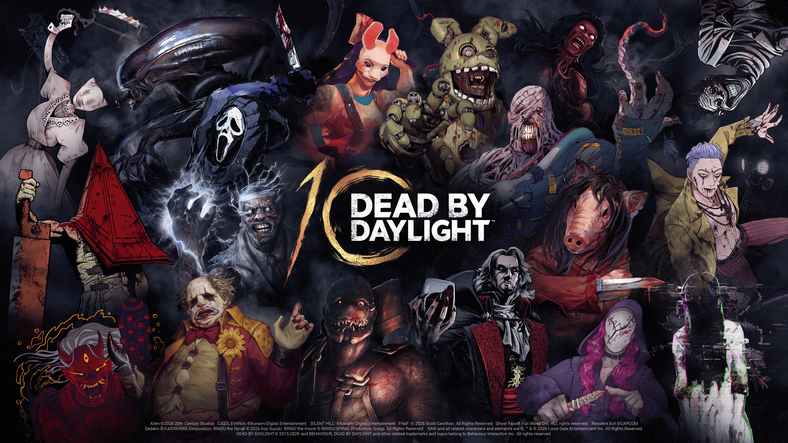

About Dead by Daylight
Dead by Daylight is an asymmetrical multiplayer horror game developed by Behaviour Interactive. In the game, one player takes on the role of a savage Killer, while the other four players play as Survivors trying to escape the Killer and avoid being caught and sacrificed.
Why I Chose This Game
I chose Dead by Daylight because it is one of my favorite games. The asymmetrical gameplay and the tension between the Killer and Survivors create an exciting and unpredictable experience. I have over 1,000 hours played and have been playing since 2016, so this is a topic I know well and can easily relate to.
What I Like About the Game
- The game has a lot of different Killers and Survivors.
- Every match feels different depending on the 42 Killers and 173 perks being brought in game.
- The horror theme makes the game intense and fun.
- There is always something new to learn or improve on while playing.
- The game is cross-progression and cross-play.
Learn More
You can visit the official Dead by Daylight website here: Dead by Daylight Official Website